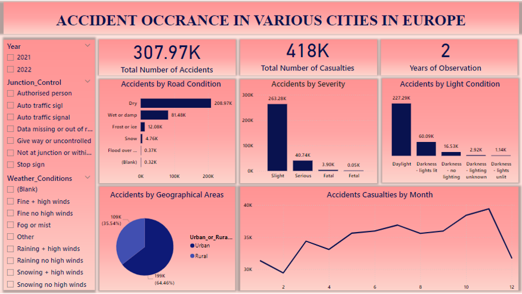

Projects on Microsoft Excel
Project 1: Analysis on laptops profile

Laptops are important tools for work, study, and entertainment, but with so many brands and models available, choosing the right one can be difficult. Two key factors that affect a laptop's performance are the amount of RAM (memory) and storage capacity.
This project focuses on analyzing different laptop models from various brands, specifically looking at their RAM and storage capacity. The goal is to find out which brands offer the best options for high-performance laptops and to see how these brands compare in terms of the number of models they provide.
Project 2: Analysis on CSAAE Trainee's view during and after training

Center for Social Awareness, Advocacy and Ethics (CSAAE) through the grant of “The Coca Cola Foundation” launched a project called “Digital Skill and Employment Project (DSEP). The motive of the project is to equip 200,000 Nigerian youth with the skills and tools for digital employment.
Project 1: Global Climate change from 18th century to 21st century

Climate change, defined as long-term alterations in temperature, precipitation, and other atmospheric conditions on Earth, is a defining challenge of our time. Over the past century, activities such as burning fossil fuels, deforestation, have led to global warming and significant shifts in weather patterns.
Project 2: Analysis on accident occurence in Europe

In the world of today, there exist a lot of road accident cases, using the Continent Europe as a case study, analysis would be made to illustrate the the effect of these accident and its major causes.

Parch and Posey is a hypothetical company specializing in paper production. They produce three types of paper and serve a diverse customer base across multiple regions.
This project utilizes the PostgreSQL Database Management System to analyze and retrieve information related to revenue growth from the and Posey database.

The Olympic Games are a major international sports event featuring summer and winter sports competitions. The Games bring together athletes from around the world to compete in various sports, promoting international unity and sportsmanship.
This project uses the PostgreSQL Database Management System to retrieve specific information from the database used in this analysis.